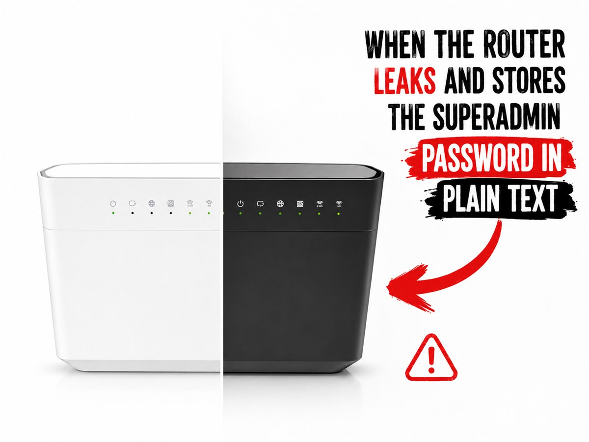
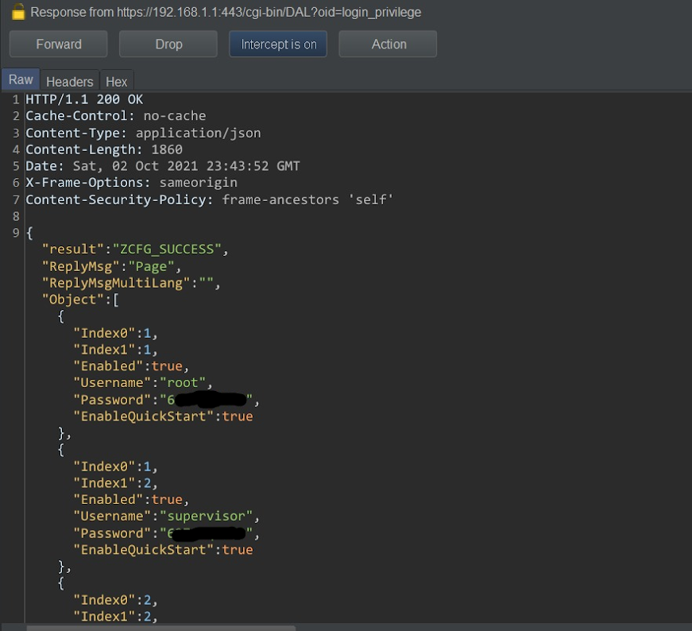

Impact
Privilege escalation by disclosure
A user-level session could read passwords for higher-privilege local accounts and management services.
These notes cover the path I reported in VMG3625-T50B firmware V5.50(ABTL.0)b2k: authenticated low-privilege sessions could call DAL getters that returned administrator, supervisor, FTPS, and TR-069 credentials. Zyxel later published the advisory with a wider affected-product list.

A user-level session could read passwords for higher-privilege local accounts and management services.
The affected paths sit in shared libzcfg_fe_dal management code, not in a single web template.
Masking values in CLI or web rendering does not help if /cgi-bin/DAL can still return the raw object.
A user-privileged account could browse directly to:
/cgi-bin/DAL?oid=login_privilege/cgi-bin/DAL?oid=tr69
and obtain cleartext values for local accounts and TR-069 credentials. My disclosure material also shows a related
/getDefaultInformation response leaking default passwords for root, supervisor, admin, admin1, and ftps.

Zyxel first assigned the CVE for VMG3625-T50B. The public advisory later listed multiple CPE, ONT, LTE, and 5G product families.
That scope is consistent with a bug in shared management code rather than a page-specific display issue.
In the firmware source, zcfgFeDal_LoginPrivilege_Get iterates through
RDM_OID_ZY_LOG_CFG_GP_ACCOUNT and copies each account's Password field directly into the outgoing JSON array.
json_object_object_add(paramJobj, "Username",
JSON_OBJ_COPY(json_object_object_get(loginPrivilegeObj, "Username")));
json_object_object_add(paramJobj, "Password",
JSON_OBJ_COPY(json_object_object_get(loginPrivilegeObj, "Password")));
The DAL command registration then exposes login_privilege as edit|get with an empty privilege string, even though the inline comment still says root_only.
The TR-069 DAL getter uses a generic copy path across the management parameter list. That includes Password and
ConnectionRequestPassword, which are copied out unless another layer explicitly strips them.
else {
json_object_object_add(pramJobj, paraName,
JSON_OBJ_COPY(json_object_object_get(mgmtJobj, paraName)));
}
The corresponding DAL registration exposes tr69 as get|edit.
Later patches show Zyxel masking values in display code by printing ******** for ACS and SIP passwords. That is a UI and CLI presentation fix, not a backend access-control fix.
printf("%-45s %s\n", "ACS Password", "********");
Other later patches add PARAMETER_ATTR_PASSWORD to fields like Password,
ConnectionRequestPassword, DefaultPassword, and PasswordHash.
That change acknowledges these values should not have been returned verbatim in getter flows.
CVE-2021-35036 for the VMG3625-T50B case.
genpass clueThis repository includes an adapted copy of the public Zyxel VMG8825-T50 keygen work by boginw, tailored for the VMG8825-B50B because the original version did not fit this router model directly. The lab is useful because it shows another place where credential material was handled as reusable vendor logic.
run-qemu.bat launches the ARM guest, rootfs.ext2 carries the extracted filesystem, and the tracked
adapted-runtime/opt/genpass/genpass wrapper is the B50B-specific version included in the repository. That wrapper accepts serials whose fifth character is V, Y, or H
before calling into vendor password-generation code under /opt/zyxel.
.\zyxel-vmg8825-b50b-keygen-lab\run-qemu.bat.root / root.genpass S182V12345678 to derive the supervisor and admin password families from a sample modem serial.# host
PS> .\zyxel-vmg8825-b50b-keygen-lab\run-qemu.bat
# inside the bundled emulator
root@VMG8825-B50B-emul:~# genpass S182V12345678
Old algorithm supervisor password.............. 789630c0
New algorithm supervisor password.............. dEfczwP8Sy
...
additional admin and Wi-Fi outputs continue belowThis is separate from the DAL bug, but it explains why the surrounding firmware model matters: multiple components could fetch, transform, display, or regenerate credential material.
genpass works internally
I started with the extracted genpass shell wrapper, not the password algorithm itself. The script validates the serial format,
exports it as SERIAL, sets LD_LIBRARY_PATH to Zyxel's extracted libraries, preloads libhook.so, and then invokes
the real worker binary: /opt/genpass/getpassword.
The visible script does not derive passwords on its own. It acts as an execution harness that feeds controlled input into vendor code that was originally meant to run inside the router environment.
libhook.so replaces the router's serial source
The preload library supplies the serial number expected by the vendor code. Static analysis of its exported symbols shows that it overrides
zyUtilIGetSerialNumber and zcfgBeCommonIsApplyRandomSupervisorPasswordNewAlgorithm.
In the first hook, the code calls getenv("SERIAL"). If the environment variable is present, it copies that value into the caller's buffer.
If not, it falls back to the original function via dlsym(RTLD_NEXT, "zyUtilIGetSerialNumber"). In the second hook, it simply returns
1, forcing the "new random supervisor password" path on during emulation.
getpassword is an orchestrator, not the algorithm
String and symbol analysis of getpassword shows that it dynamically resolves the real generators at runtime. Its string table contains
libzcfg_be.so, libzcfg_be_wind.so,
zcfgBeCommonGenKeyBySerialNumMethod2, zcfgBeCommonGenKeyBySerialNumMethod3,
zcfgBeCommonGenKeyBySerialNumConfigLength, zcfgBeCommonGenKeyBySerialNumConfigLengthOld,
and zcfgBeWlanGenDefaultKey.
The binary does not embed one monolithic algorithm. It loads vendor library entry points, asks them for the required buffer sizes, invokes multiple generation routines, and prints the results under labels such as old/new supervisor, old/new admin, WIND-specific admin variants, and several Wi-Fi key families.
This works in QEMU because the extracted filesystem still contains the userland and shared objects the original firmware expected.
The wrapper points LD_LIBRARY_PATH at Zyxel's library directories, the preload hook substitutes missing hardware-derived state,
and the vendor password functions execute as if they were running on the device.
From a reverse-engineering perspective, genpass is a harness around reusable product logic rather than a standalone cracking tool.
The lab setup does not reimplement Zyxel's algorithms; it restores just enough runtime context to call them directly.
Disassembly of zcfgBeCommonGenKeyBySerialNumMethod2 and
zcfgBeCommonGenKeyBySerialNumMethod3 shows two exact supervisor paths. Method2 computes MD5(serial), renders each digest byte as
vendor-style hex where one-nibble bytes are duplicated instead of zero-padded, hashes that string again, and then samples every third character to build the
old supervisor password.
Method3 reuses that same double-hash stream, uppercases it, derives a 16-bit seed from bytes 1 and 2 of MD5(serial), increments the seed
until a ten-slot mod-3 schedule contains uppercase, lowercase, and digit classes, and then maps each sampled byte into safe alphabets with explicit substitutions
for I, O, l, o, 1, and 0. That is why the generator can be ported cleanly into browser
JavaScript: the firmware logic is deterministic and table driven.
Method2 and Method3
This widget is a browser-side port of the two supervisor routines exposed by the bundled getpassword runtime.
It validates the B50B serial format accepted by this repository's wrapper, reproduces Zyxel's double-hash quirk, and replays the final Method3 slot mapping.
MD5(serial) in vendor hex
MD5(round1) in vendor hex
Method2 returns the first eight tapped characters. Method3 uppercases the ten-character tap before class mapping.
The scheduler advances the seed until the ten slots contain uppercase, lowercase, and digit classes at least once.
Ready. Generate a result or replay the slot-by-slot mapping.
Method2
Method3
This matches the call order inside getpassword: old supervisor is Method2, new supervisor is Method3.
Describing this only as “cleartext storage” misses the practical impact: a weaker account could retrieve secrets for higher-privilege local users and remote-management channels through web-exposed DAL endpoints. In a real deployment, that gives an authenticated attacker a direct privilege-escalation path.
The later patch trail is also useful context. The source history shows incremental changes: getter exposure, masking in display functions, and later password-type metadata on sensitive parameters.